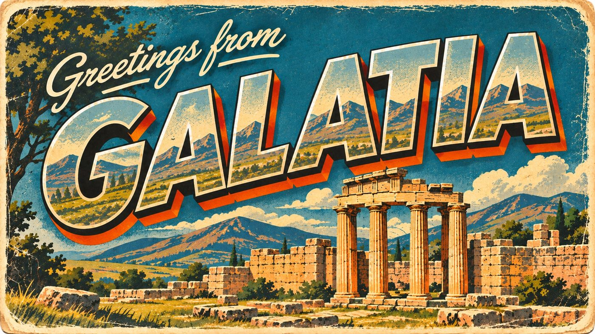

Night 1: Galatians in Context
Badge earned: Visitor CenterBig idea
Paul writes because the Galatians are trading the gospel of grace for a different “gospel” that adds the works of the law to Christ.
The six markers
tap to openLast night's walk through the letter, one stop at a time. Open the ones you want to revisit.
Who was listening?
tap each groupGalatia was a mix of people with very different backgrounds. These were the ones Paul met on the road.
Choose a group to see who they were and where we meet them in Scripture.
Three words that matter
tap to flipPaul chooses his words carefully in Galatians 1:6-9. Three of them in the original Greek.
The letter at a glance
tap a partSix chapters, three parts. Here is where each one is headed.
Take it home
Saved only on this device. Nobody else can see it.
Next up: Night 2. Read Galatians 1 and come ready to talk about where Paul says the gospel came from.